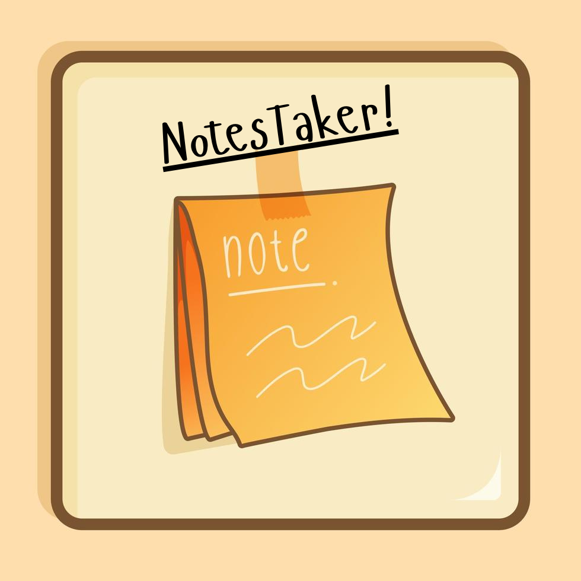

I am
Where The Obsession Began
From Apple Shortcuts to Self-Taught Python Automations
An Innate Aversion to Manual Repetition
I have an innate aversion to manual repetition. Long before training neural networks or designing agent pipelines, my obsession started with Apple Shortcuts. Chaining micro-actions, eliminating daily friction, and seeing logic bring computers to life sparked an enduring drive to build software that thinks, automates, and empowers.
Parked Car Pinner
↗Captures exact GPS coordinates and drops a persistent pin so you never lose your parking spot in crowded lots.
Assignment Teller
↗Parses upcoming class deadlines and deliverables into an instant spoken or visual briefing without opening syllabi.
Alarm Clock Setter
↗Calculates sleep cycles and configures morning wake-up alarms dynamically based on tomorrow's schedule.
From The Brain To The Machine
Why I studied Cognitive Science & Neural Computation at UC San Diego
Why Cognitive Science? Because I wanted to understand biological intelligence before teaching machines how to think. Studying synaptic plasticity, visual perception, and computational neuroscience gave me a foundational appreciation for neural networks, gradient optimization, and transformer attention mechanisms.
The Frontier & Agentic Systems
Evaluating Nemotron-12B with NVIDIA and building with Model Context Protocol (MCP)

Today as an AI Engineer at Handshake AI, I collaborate directly with NVIDIA evaluating Nemotron-12B, curating golden benchmark datasets across frontier models, and designing 300+ context strategies with ~95% accuracy. I actively architect with the Model Context Protocol (MCP) to power autonomous, reliable agentic workflows that can reliably use tools and reason in production.
The Creative Sandbox
Some of my passion projects while studying in college.



What I'm Doing Right Now
Live telemetry into active engineering projects & heavy audio rotation.
RigScouter-AI-DataBase-
Active engineering repository streaming live from personal GitHub meta-fetcher API.
"feat: add ZenRows proxy fallback to bypass anti-bot blocks during HTML fetching"

Mike O'Hearn - What Is Love (Ultra Slowed) - TikTok Remix
TommyMuzzic, ZeddMusique, PHAZZED
Single / EP
Let's Build Something Meaningful
Curiosity is best shared. My inbox and conversations are always open.
I believe the most exciting ideas spark when people connect over genuine obsessions. Whether you're designing agentic infrastructure, exploring computational models of the brain, tinkering on a weekend prototype, or just want to swap music recommendations — I'd love to chat.